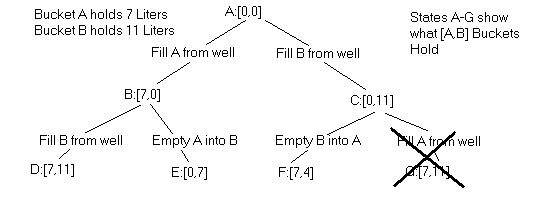

In this study, we'll look at a specific problem that is actually an example of a wide class of problems, all of which may be addressed in the same manner.
Water Bucket Problems
The problem is as follows. You go to the well with a 7 liter bucket and an 11 liter bucket. You wish to fill one of them with exactly X liters of water. How can you do this in the fewest number of operations, where each operation either fills or empties one of the two buckets.
Well if X is 7 or 11 then the answer is easy. One operation is all that is required. Suppose that X is 4. Here we can fill the 11 liter bucket from the well and then use it to fill the 7 liter bucket. That will leave 4 liters of water in the 11 liter bucket.
What if X is 6? Before proceeding, try to solve this on your own.
We are going to develop a Python program that will search for the solution in a brute force (considering all possibilites) but fairly efficient manner.
State Search
It is useful to view this search as a tree of "states", where each state is the amount of water in each bucket and a filling or emptying operation generates a new state. Look at the following diagram.

We start with the state [0,0], meaning that both buckets are empty (contain zero liters of water). We labeled this state "A". Filling bucket A advances us to state [7,0] which we label B.
At each state we may generate up to 6 new states. (What are they?) But states that have already been encountered are uninteresting for 2 reasons. First they may make the program loop and secondly, we know there is a shorter path to that particular state. Notice how we crossed out state G because it is a duplicate of D. Some rejected states were not shown. For example, at state B we could empty bucket A into the well taking us back to [0,0]. Again, that is simply not an operation of interest.
So the operation of the program will be as follows. We start with state "A" and from it generate states "B" and "C". Then we work on state "B" generating states D and E.
Two Types of Searches
Now we have a choice. Do we do a depth first or breadth first search? Depth first would mean working next on D and its descendants, then coming back to state E, and possibly waiting a while to get to state B. Breadth first means putting the new states D and E on hold, and working next on state B. With breadth first we process the tree "row by row".
This works out to be the best strategy for finding the optimum solution in the shortest time. You might want to give some thought as to why this is so.
But how do we put states D and E on hold? Well, there is a handy data structure called a FIFO (first in, first out) queue which works like a line of people at a ticket counter. Each time a new state is generated we will add it to the back of the queue. When we're ready to resume work on an older state, we'll remove the one at the front of the queue and work on it.
Queues in Python
A FIFO queue is easily implemented with a Python list. The list append method adds new states to the back of the queue. The first state is accessed as "queue[0]" and this state may be popped off with either the "remove" method or a slice operation.
This strategy is quite general and can used for lots of search problems. One common example is the tile game where, for example we have 8 numbered tiles an 3x3 square. One tile may be moved at a time into the empty square. The goal is to arrange the 8 tiles in order. The more complex game found in toy stores has 15 tiles in a 4x4 square.
The Program
The program divides the water bucket problem into 2 parts and defines a class for each. Click here to view buckets.py I suggest printing it out to follow along.
The manager object handles the queue, adding new states as they are generated, first checking
that they have not been encountered already. For this it uses a dictionary seen.
This dictionary also serves a second purpose. It keeps track of each states "parent"
state. There are 3 methods for the manager, adding a new state (with parent), getting the
next state to work on, and finally generating a solution from the last state added by
chaining back parent by parent to the beginning state.
The bucketPlayer object is specific for this game but interacts with the manager is a fixed pattern. Other classes such as tilePlayer could be written as well. It would even be possible to subclass each of these from a general "Player" class.
A "player" object gets states from the manager after first "seeding" an initial state. It works on the state to generate new states. Each is tested to see if we have won. The state is then submitted to the manager for queuing. Once the winning state has been found, the manager is queried for the full solution.
In this game, states are represented by a 2 element list. The 1st element is the number of
liters of water in bucket A, and the 2nd the amount in bucket B. When generating
new states notice the use of the min function to determine how much water to pour from
A to B, or from B to A. You can't pour more water than is in the container, nor more than
the other container has room for.
Here is a sample run of the program. It is the problem given at the beginning.
>>> from buckets import * >>> m = manager() >>> p = bucketPlayer(m) >>> # A=7 liters, B=11 liters, Want=6 ... >>> p.playGame(7,11,6) Solution is [0, 0] [7, 0] [0, 7] [7, 7] [3, 11] [3, 0] [0, 3] [7, 3] [0, 10] [7, 10] [6, 11] >>>
We separated the manager functions from the game playing functions into 2 classes so that
the manager class could be used with multiple games. It doesn't need to know how a state
is represented, as long as it can turn it into a unique string to use it as a key value
in the seen dictionary.
There is a second advantage also in the separation of manager and player functions. Imagine several player objects working in parallel, all connected to the same manager. The manager and each player are separate processes, perhaps running on separate computers. Now we have parallel programming. It wouldn't make a lot of sense on this problem because the communication overhead is apt to be much greater than the cost of computing new states. But with more complex problem (like chess?) there could be tremendous gains in speed.
Ideas for further Development
Place some print statements in the code to watch it carefully as the queue grows and shrinks.
Find a way to test if there are any amounts of water between 0 and 11 liters that cannot be obtained with a 7 liter and 11 liter bucket. (whole liters only, of course)
Change the program to generate bucket problems for your friends requiring a certain number of moves.
What is special about 7 and 11 as bucket sizes? What happens when other combinations are used? Yes, Kirby, this is for you.
What happens when new states are added to the front of the queue instead of the back? Try it.
For the the more ambitious.
Write a player class for the tile game. Use 8 tiles on 9 squares. How would you represent each state? Hint: any 9 digit number will fit in a Python integer.
If you have access to Twisted or other CGI environment, consider implementing a parallel version of this program.